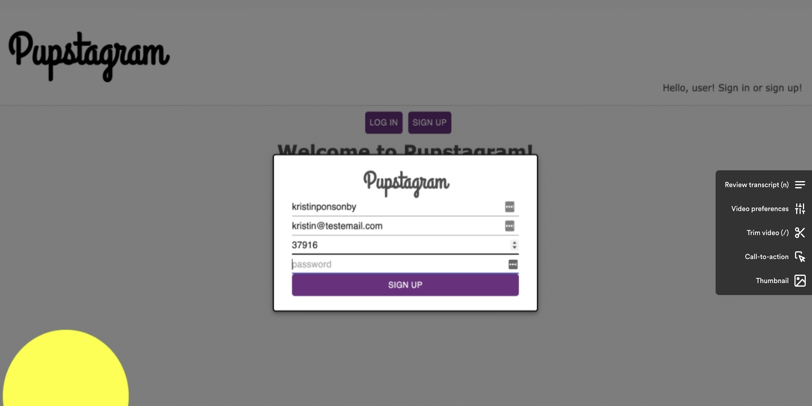

About Me
I have a passion for building human-centered accessible digital experiences.
Currently, I'm focused on building on my knowledge of React, Sass, Typescript, and unit testing.
When I'm not coding, I love to write, cook, run, and hang out with my pittie rescue Juna.
An Instagram style social media app-for dog lovers!

React component-based front end and a Rails API backend. Utilized JSON Web Tokens and localStorage to store encrypted user information client-side.
An application for browsing/storing gluten-free recipes.
JavaScript front end and Rails backend/routes. Used a SQLite database for development purposes and storing user information.
Browse all your fave food trucks in Knoxville, TN.
Utilized Ruby on Rails and the model-view-controller pattern to allow users to browse/create resources and leave reviews. Google Omniauth for user authentication.
An app to browse all dog parks in Washington, D.C.
Sinatra, Rails, and CSS web application with a SQLite database. Users may track details about dog parks in their area including address, water availability, and size.